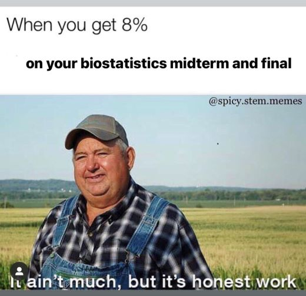

“It’s Just Calculus” is an overused inside-joke that I have with myself, my 4 year old, partner and my two pups.
This story begins with a TA who was struggling with his ego a bit and would critique the hell out of my Intro to Biostatistics assignments and tell me things I was supposed to know despite never learning it in class.
Quick gist - in one of his feedback sections, regarding what type of calculation I used or maybe what sort of graph I created whatever the case he wrote…
it’s just calculus
…implying that calculus is easy and duh of course, it’s just calculus.
Nonetheless it was one of the best laughs I’ve ever had and I’ve ran this joke into the ground so hard and there’s no end in sight that I’ve dedicated my website to this.
This is the first biostats-related meme I’ve made, to which I had sent to the professors and TA after nearly receiving a negative grade (this is why standardized and timed testing needs to end but I will save that for another time). They did enjoy this handcrafted meme though. :)
